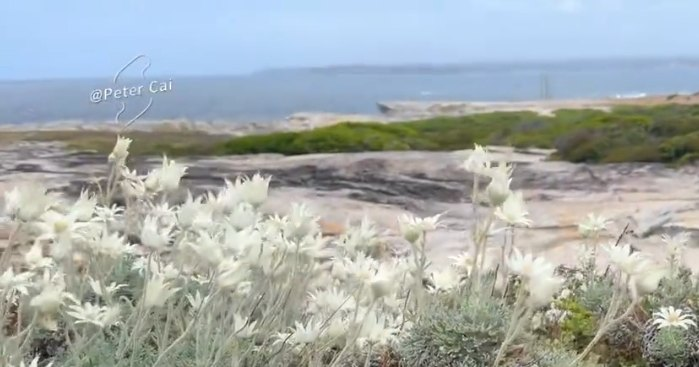
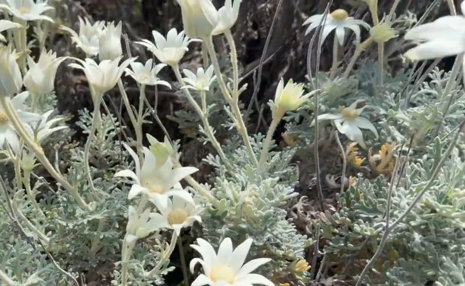
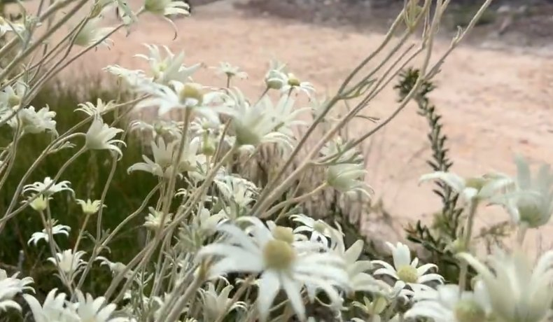

Community walk · come along with Grace
Flannel Flowers by the Sea 🌼
Kamay Botany Bay National Park · Sunday wildflower walk
Spring has covered the cliffs of Kamay in white flannel flowers. Join an easy coastal walk led by Peter Cai (Lao Cai) of SydneyHiking Club. Walk at your own pace and enjoy a picnic by the sea 🌊



Photos: Peter Cai · SydneyHiking Club, Kamay, 1 Nov 2026
Details
Community · Open to all
Kamay Flannel Flower Walk
WhenSun 15 Nov 2026
10:00am meet
10:00am meet
RouteCape Solander → Tabbigai Gap →
Long Nose Point → Cape Baily → Lighthouse
Long Nose Point → Cape Baily → Lighthouse
Distance4–8 km, adjustable
Very easy
Very easy
LeaderPeter Cai (Lao Cai)
SydneyHiking Club
SydneyHiking Club
Sign upMessage Grace
Join · WhatsApp Grace
What to bring
- 💧 1 litre of water
- 🥪 Packed lunchDry food or homemade picnic food that fits in a backpack
- 🧴 SunscreenHiking poles optional
- ☔ Rain gearRaincoat, rain pants or an umbrella. If it's dry, leave them in the car
Good to know
🚗 Cars entering the national park need a NSW Parks annual pass, or buy a day ticket at the gate.
🥾 Everyone walks at their own risk and pace. Please look after yourself and stay on marked tracks.